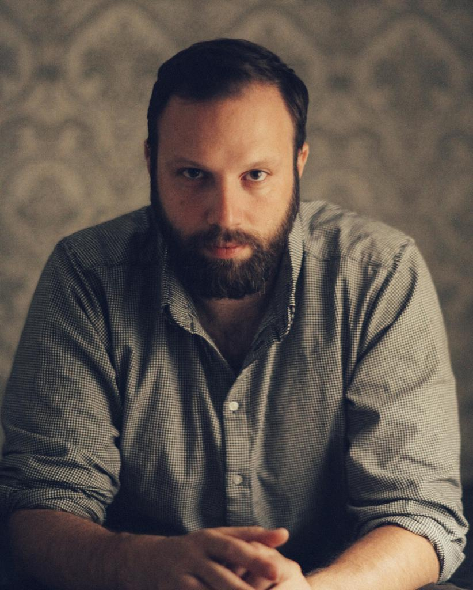

YORGOS LANTHIMOS
Yorgos Lanthimos nació en Atenas, Grecia, el 23 de septiembre de 1973
Ha dirigido varios vídeos de danza en colaboración con coreógrafos griegos, además de anuncios de televisión, vídeos musicales, cortometrajes, obras de teatro y ha fotografiado editoriales y campañas de marcas de moda.
KINETTA , su primer largometraje, se proyectó en festivales de cine de Toronto y Berlín con gran éxito de crítica.
Su segundo largometraje , KYNODONTAS , ganó el premio Un Certain Regard en el festival de cine de Cannes de 2009, seguido de numerosos premios en festivales de todo el mundo. Fue nominada al Premio de la Academia a la Mejor Película en Lengua Extranjera (Oscar) en 2011.
ALPS ganó el Osella al Mejor Guión en el Festival de Cine de Venecia de 2011 y el Premio a la Mejor Película en el Festival de Cine de Sydney de 2012.
Su primer largometraje en inglés, THE LOBSTER , se presentó en competición en el 68º Festival de Cine de Cannes y ganó el Premio del Jurado. También ganó Mejor Guión y Mejor Diseño de Vestuario en los Premios del Cine Europeo de 2015. En 2017 fue nominada al Premio de la Academia al Mejor Guión Original (Oscar). Colin Farrell fue nominado a un Globo de Oro y a un Premio de la Academia de Cine Europeo por su actuación en la película.
THE KILLING OF A SACRED DEER , su quinto largometraje, se estrenó en Competición en el 70º Festival de Cine de Cannes y ganó el premio al Mejor Guión. Estuvo nominada a Mejor Director, Mejor Guión y Mejor Actor (Colin Farrell) en los Premios de la Academia de Cine Europeo.
Su última película, THE FAVOURITE , con Olivia Colman, Emma Stone y Rachel Weisz, se estrenó en 2018 en el 75º Festival de Cine de Venecia, donde ganó el Gran Premio del Jurado - León de Plata y Olivia Colman ganó la Copa Volpi - Premio a la Mejor Actriz. Olivia Colman también ganó el Globo de Oro a la Mejor actriz de Musical o Comedia. La película recibió un récord de diez premios BIFA y fue nominada a doce BAFTAS, ganando siete de ellos. También estuvo nominada a diez premios de la Academia (Oscar), incluyendo Mejor Película, Mejor Director, dos nominaciones a Mejor Actriz de Reparto y Mejor Actriz, que ganó Olivia Colman.
BLEAT , un cortometraje mudo -con Emma Stone y Damien Bonnard- que se proyecto únicamente con música interpretada por una orquesta en vivo, se estrenó en mayo de 2022 en la Ópera Nacional de Grecia.
Actualmente se encuentra en postproducción de su séptimo largometraje POOR THINGS y terminó de filmar su octavo largometraje AND.